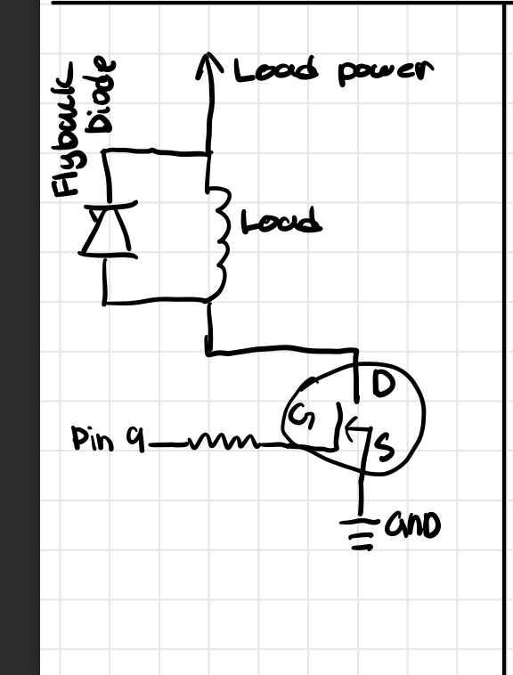
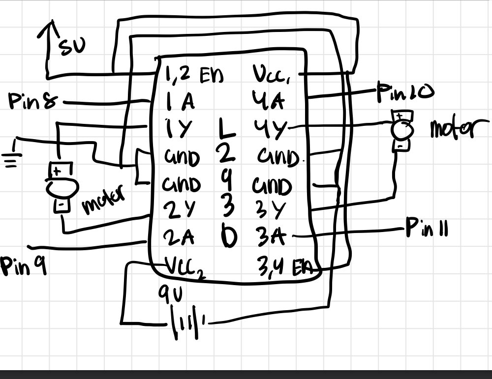

Additional Questions
1. The absolute maximum amount of current between pins 2 and 3 depends on if it is Continuous or Pulsed. Continuous has a maximum of 37.2A at 25 degrees C. Pulsed has a maximum of 80A.
2: Draw a schematic for a circuit with using at least your arduino, a DC motor, a flyback diode, and capacitors between power and ground. Find parts with datasheets you could use for each of these schematic components.
This is my schematic for my arduino, DC motor, and flyback diode.

3: Here is the datasheet for the L293D chip: https://www.ti.com/product/L293DLinks to an external site.. Draw a schematic using at least your arduino, this chip, and two motors. Write (pseudo) code that shows how you would move the motors both forward, both back, then one forward one back, and one back then forward.
This is my schematic for my arduino, and the L293D chip.

Here is the pseudo code for moving the motors in different directions
// Initialize the Pins
int motor1_p1 = 8;
int motor1_p2 = 9;
int motor2_p1 = 10;
int motor2_p2 = 11;
void setup() {
// Set the motor pins to output
pinMode(motor1_p1, OUTPUT);
pinMode(motor1_p2, OUTPUT);
pinMode(motor2_p1, OUTPUT);
pinMode(motor2_p2, OUTPUT);
}
void loop() {
// Both move forwards
digitalWrite(MOTOR1_IN1, HIGH);
digitalWrite(MOTOR1_IN2, LOW);
digitalWrite(MOTOR2_IN1, HIGH);
digitalWrite(MOTOR2_IN2, LOW);
delay(2000);
// Both move backward
digitalWrite(MOTOR1_IN1, LOW);
digitalWrite(MOTOR1_IN2, HIGH);
digitalWrite(MOTOR2_IN1, LOW);
digitalWrite(MOTOR2_IN2, HIGH);
delay(2000);
// One forward, one backward
digitalWrite(MOTOR1_IN1, HIGH);
digitalWrite(MOTOR1_IN2, LOW);
digitalWrite(MOTOR2_IN1, LOW);
digitalWrite(MOTOR2_IN2, HIGH);
delay(2000);
}